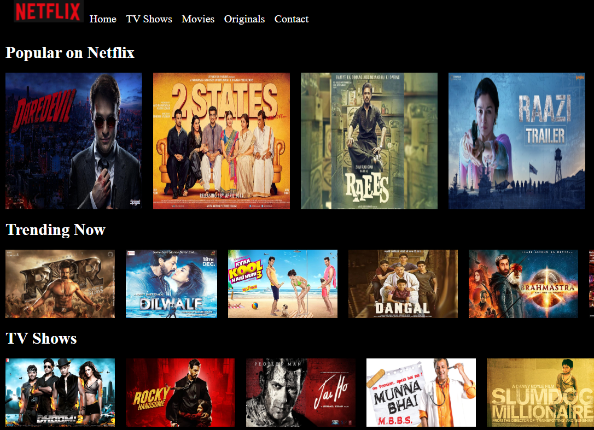
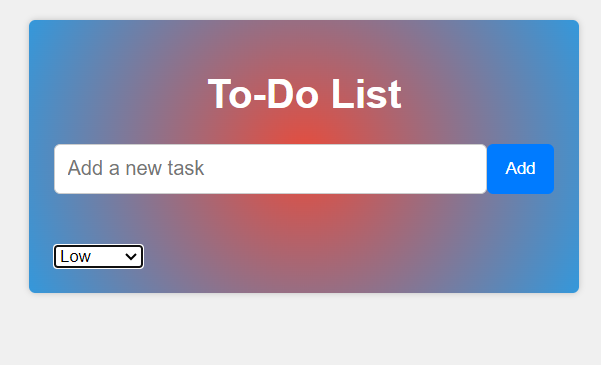

About
I am currently a web designer and an intern at SharpenedMind Technologies Private Limited , where I apply my skills in HTML, CSS, JavaScript, and Bootstrap to create responsive and user-friendly websites for various clients and projects. I have also earned multiple certifications in web development from reputable platforms such as freeCodeCamp, CareerNinja, and Udemy, demonstrating my passion and eagerness to learn new technologies and frameworks. My goal is to become a full-stack developer and contribute to impactful and innovative solutions.
Project Showcase

Netflix Clone
This project is a simplified front end clone of Netflix. It was created with HTML and CSS (Grid and Flexbox).
View Demo

To Do App
This project is a simplified front end To Do App. It was created with HTML,CSS and JS.
View Demo
Experience
- Web Designer - Freelancer - Nov 2022 - Present
I apply my skills in HTML, CSS, JavaScript, and Bootstrap to create responsive and user-friendly websites for various clients and projects - Web Development Intern - SharpenedMind Technologies Pvt Lt- Oct 2023 - Present